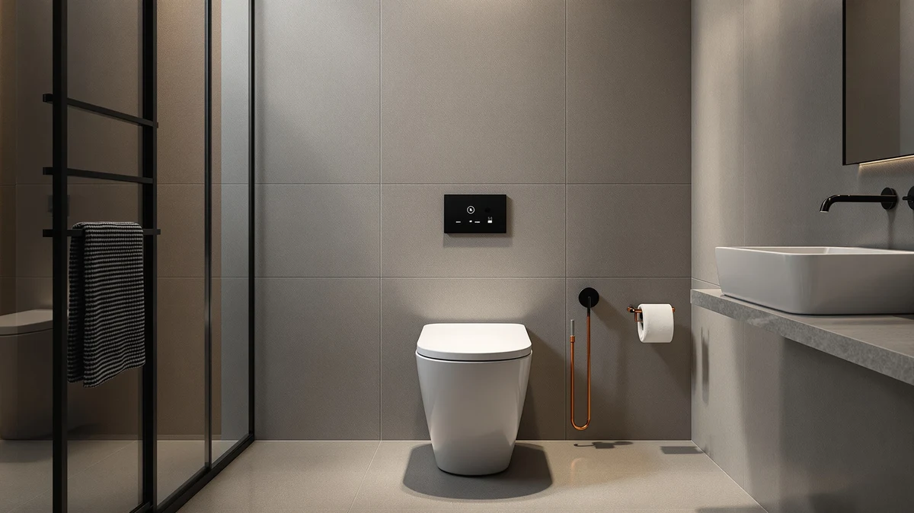

How to Open Toilet Flush: Complete Guide (2026)
Prices and picks verified as of October 2026. Independent, reader-supported reviews.


Things to Know Before You Buy
- Push-button flush plates on one-piece toilets usually twist, unscrew, or unclip, while older lever models lift straight off the tank.
- Shutting off the water supply and draining the tank fully before you start prevents a flooded bathroom floor.
- Mineral scale from hard water is the most common reason a flush button or lever sticks or won't engage.
- A flapper or seal older than five years is a frequent culprit behind a flush that won't fully open or close.
- Replacement flush valve kits for one-piece toilets run about $10 to $20 and fit most push-button and lever systems.
Knowing how to open toilet flush mechanisms matters the moment a push button sticks, a lever goes limp in your hand, or water keeps trickling into the bowl long after a flush ends. On most one-piece toilets, the flush plate, lever, or valve stack hides behind a panel that twists off or lifts away once the tank is empty, and reaching the parts underneath takes fifteen minutes with basic tools. You don't need a plumber for a stuck button or a worn flapper. You need the right order of steps and a little patience with hardware that hasn't been touched in years.
We researched manufacturer service guides and compared verified owner reviews across dual-flush and lever-style one-piece toilets to build the walkthrough below. Reviewers consistently note that mineral buildup, not a broken mechanism, causes most stuck flush buttons, and a ten-minute vinegar soak solves what looked like a hardware failure. Work through the five steps in order, keep the tank draining before you touch anything, and you'll have the flush mechanism open, inspected, and reassembled before the parts have a chance to seize up again.
What You'll Need
- Supplies: replacement flush valve seal or flapper, white vinegar for mineral deposits, clean rags or paper towels
- Tools: adjustable wrench, Phillips and flathead screwdrivers
Step 1: Shut off the water supply and drain the tank
Locate the shutoff valve on the wall behind the toilet, usually a small oval handle on the supply line. Turn it clockwise until it stops, then hold the flush button or lever down and let the tank empty completely. This is the step most people skip, and it's the one that turns a simple repair into a wet bathroom floor.
Once the tank is empty, press the flush mechanism a second time to clear any water left in the line between the valve and the bowl. If the toilet has a fill valve that keeps hissing after you shut the supply, check that the shutoff valve is fully closed rather than only turned partway. A valve that's only half-closed still lets water seep through while you work.
Step 2: Remove the flush button plate or tank lid
On a push-button model, the button or its surrounding plate typically turns counterclockwise or releases with a firm quarter-turn once you press down slightly. Some models use a small retaining clip underneath instead, which a flathead screwdriver pries loose. If your toilet uses a side lever instead, skip the button and lift the tank lid straight up with both hands and set it on a folded towel so it doesn't chip.
Owners report that the button housing feels stuck the first time because manufacturers coat the threads lightly at the factory and that coating hardens over a few years. A few seconds of firm, steady pressure usually breaks it free without forcing anything. If it still won't turn, go back to step one and soak the collar with vinegar for ten minutes before trying again.
Step 3: Detach the flush valve or lever linkage
With the lid or button housing off, you'll see the flush valve stack sitting in the center or side of the tank, connected to the bowl by a cable or lift rod. Disconnect the cable from the button mechanism by squeezing its retaining tab, or unhook the lift rod from the lever arm if your toilet uses the older style. Take a photo with your phone before you disconnect anything, since the clip orientation matters on reassembly.
Reach into the tank and loosen the large locknut that holds the flush valve body in place from underneath. An adjustable wrench handles most locknuts, though some are plastic and only need hand pressure. This is also where you'll see firsthand why the flush felt weak or sluggish: a warped seal, a cracked flapper, or a buildup of white scale around the seat.
Step 4: Clean or replace the worn flush components
Wipe down the valve seat, the flapper or seal, and the cable linkage with a rag soaked in white vinegar to dissolve mineral scale. Let stubborn deposits sit for a few minutes before you scrub them with an old toothbrush. If the flapper is cracked, stiff, or coated in a layer that won't come off, replace it rather than cleaning it. A worn seal costs a few dollars and takes two minutes to swap, and it's the single most common reason a flush mechanism opens poorly even after everything else checks out.
Check the lift rod or cable for fraying or stretching while you're in there, since a stretched cable is why some push-button toilets need two or three presses to trigger a full flush. Match any replacement part to the brand and model stamped on the valve body so the fit stays exact. Reviewers who skip this matching step frequently end up with a universal flapper that seats unevenly and leaks within a few months.
Step 5: Reassemble and test the flush
Tighten the locknut back onto the valve body by hand first, then snug it with the wrench without overtightening, since cranking too hard cracks the plastic threads. Reconnect the cable or lift rod using the clip orientation from your photo, then set the lid or button housing back in place and turn it clockwise until it seats firmly.
Turn the water supply valve back on slowly and watch the tank fill. Press the flush button or lever three or four times in a row to confirm it engages smoothly and the tank refills at the correct level each time. If the button still feels stiff after reassembly, remove it once more and check that the vinegar soak reached every surface the first time. A flush mechanism that opens and closes cleanly on the first try means the job is done.
Common Mistakes to Avoid
The biggest mistake people make when they learn how to open toilet flush mechanisms is skipping the water shutoff step and discovering a flooded floor mid-repair. A close second is forcing a stuck button plate before giving vinegar a chance to break down the mineral scale underneath, which cracks the plastic housing and turns a $15 fix into a $60 one. Take a photo of the cable or lift rod connection before you disconnect anything. Owners who skip this step often reconnect the linkage backward and end up with a flush that won't trigger or won't shut off.
Another frequent error is replacing a flapper or seal with a generic universal part instead of matching the brand stamped on the valve body. Reviewers consistently note that mismatched seals seat unevenly and start leaking within a few months, which means redoing the entire job. Overtightening the locknut happens almost as often, since the plastic threads on most one-piece toilet valve bodies strip long before a wrench reaches real torque. Hand-tighten first, then add only a quarter turn with the wrench.
Finally, don't test the flush once and call it finished. Press the button or lever three or four times in a row after reassembly, since a mechanism that works on the first press but hesitates on the second usually has a linkage that's slightly misaligned. Catching that now saves you from opening the whole assembly again next week.
Our Top Picks
If the flush mechanism you opened turns out to be more worn out than worth saving, these one-piece toilets replace the whole unit with a dual-flush system that's easier to service from day one.

Editor's Pick
Elongated One Piece Toilet with
The dense glaze layer resists the mineral buildup that jams most flush buttons, and the dual-flush siphon system stays accessible if it ever needs service.
$209.99
Check Price on Amazon
Best Value
DeerValley Elongated One Piece Toilet
A straightforward white push-button and skirted shell keep the flush mechanism simple to reach, which matters if you expect to open it again down the line.
$246.99
Check Price on Amazon
Premium Choice
Smart Toilet with Bidet Built
The touchless sensing flush skips the button assembly entirely, trading the usual stuck-lever problem for an electronic trigger and built-in bidet functions.
$399.99
Check Price on AmazonFrequently Asked Questions
How do I know if my toilet has a push-button or lever flush?
Look at the tank lid. A round or rectangular button on top means a push-button dual-flush system, while a handle on the side or front of the tank means a traditional lever and lift-rod assembly.
What if the flush button or lever won't budge at all?
Mineral scale around the button collar or a corroded lift rod is the usual cause. Soak the area with white vinegar for ten minutes before you try again, and avoid forcing it, since plastic housings crack under pressure.
Do I need to shut off the water before opening the flush mechanism?
Yes. Shutting off the supply valve and draining the tank first keeps water from spilling into the bathroom once you lift the lid or disconnect the valve stack.
Can I open the flush mechanism without removing the whole tank lid?
On most push-button one-piece toilets, yes. The button plate comes off on its own, and you only need to lift the full lid on older lever-style tanks where the handle linkage sits beneath the lid itself.
How often should I open and inspect the flush mechanism?
Once a year is enough for most households, or sooner if you notice the flush weakening, the button sticking, or water running into the bowl between flushes. Hard water areas benefit from checking every six months.
Verdict
Learning how to open toilet flush mechanisms comes down to five steps done in order: shut off the water and drain the tank, remove the button plate or lid, detach the valve linkage, clean or replace the worn parts, then reassemble and test the flush several times. Most stuck buttons and weak flushes trace back to mineral scale or a worn flapper, both of which cost under $20 to fix once the mechanism is open in front of you. Take a photo before you disconnect the cable, hand-tighten the locknut before you reach for a wrench, and you'll avoid the two mistakes that turn this into a repeat job. If the valve body you find underneath is cracked or corroded beyond cleaning, a toilet like the Lamanelle elongated one-piece model replaces the whole flush system with a dense-glaze dual-flush design that resists the same buildup from the start.